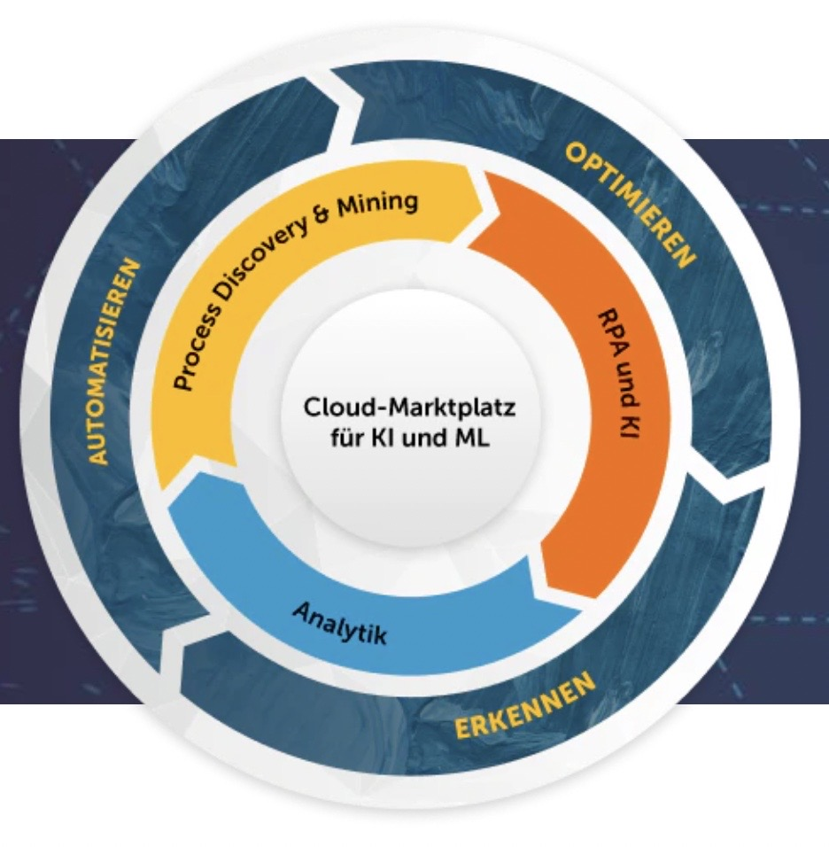
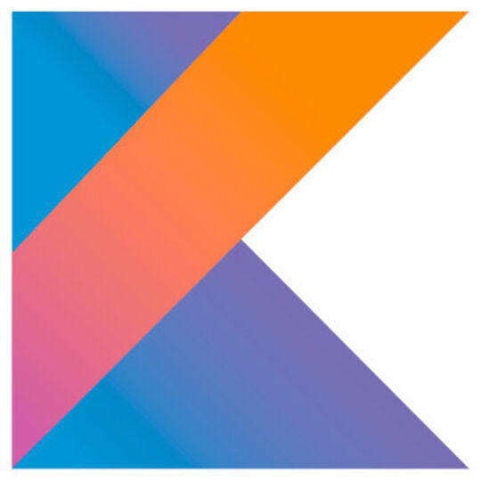
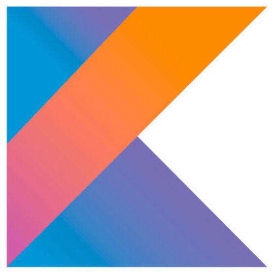

What are the benefits of intelligent automation?
AI AND RPA make automation of incredibly complex business tasks a reality Extending RPA with AI technologies expands business process automation capabilities to almost any scenario - cognitive bots can make decisions and learn on the job to become valuable resources in your human-digital workforce. The transformative potential of intelligent automation is that it creates the opportunity to reshape the seamless integration of technology, work processes, and people in organizations.
AI AND RPA make automation of incredibly complex business tasks a reality Extending RPA with AI technologies expands business process automation capabilities to almost any scenario - cognitive bots can make decisions and learn on the job to become valuable resources in your human-digital workforce. The transformative potential of intelligent automation is that it creates the opportunity to reshape the seamless integration of technology, work processes, and people in organizations.


 
